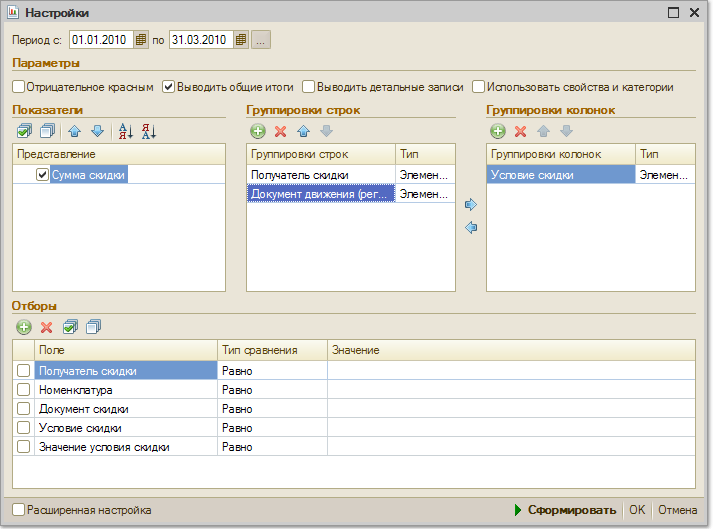

Меню Отчеты > Продажи > Предоставленные скидки
В отчете "Предоставленные скидки" выводится информация о предоставленных ручных и автоматических скидках по различным условиям в разрезе позиций номенклатуры.

Показатели
В качестве показателя отчета выводится информация о сумме скидки. Отчет может быть сгруппирован по условиям предоставления скидки, по получателям скидки, по номенклатуре и т.д.. В отчете также можно получить информацию о документе, по которому была предоставлена скидка (Документ скидки).
Группировки строк и колонок
Установив группировку колонок Условие скидки, можно получить сравнительный анализ сумм различных скидок: ручных скидок, скидок по дисконтным картам, скидок по сумме продаж и т.д. Информация в отчете может быть сгруппирована по периодам (месяц, день) для формирования отчета по динамике изменения суммы скидок в различные периоды.